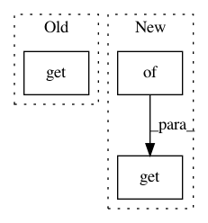

070259ba60b6623a3ff8db7b5f57c3972d0ff2b1,examples/mujoco_all_ray.py,,run_experiment,#Any#Any#,142
Before Change
reg=1e-3,
)
elif policy_params["type"] == "lsp":
preprocessing_layer_sizes = policy_params.get(
"preprocessing_layer_sizes")
if preprocessing_layer_sizes is not None:
nonlinearity = {
None: None,
"relu": tf.nn.relu,
After Change
preprocessor_params.get("function_name")]
preprocessor = preprocessor_fn(
*preprocessor_params.get("args", []),
**preprocessor_params.get("kwargs", {}))
else:
preprocessor = None
In pattern: SUPERPATTERN
Frequency: 3
Non-data size: 3
Instances
Project Name: rail-berkeley/softlearning
Commit Name: 070259ba60b6623a3ff8db7b5f57c3972d0ff2b1
Time: 2018-07-17
Author: kristian.hartikainen@gmail.com
File Name: examples/mujoco_all_ray.py
Class Name:
Method Name: run_experiment
Project Name: rail-berkeley/softlearning
Commit Name: cfe2fda04c7de2e0ef4df609455ccbe81678bb56
Time: 2018-07-17
Author: kristian.hartikainen@gmail.com
File Name: examples/mujoco_all_sac.py
Class Name:
Method Name: run_experiment
Project Name: rail-berkeley/softlearning
Commit Name: 0e49e55d906660e5c9168447c77ebc6d917dda5c
Time: 2018-10-22
Author: hartikainen@berkeley.edu
File Name: examples/development/variants.py
Class Name:
Method Name: get_variant_spec